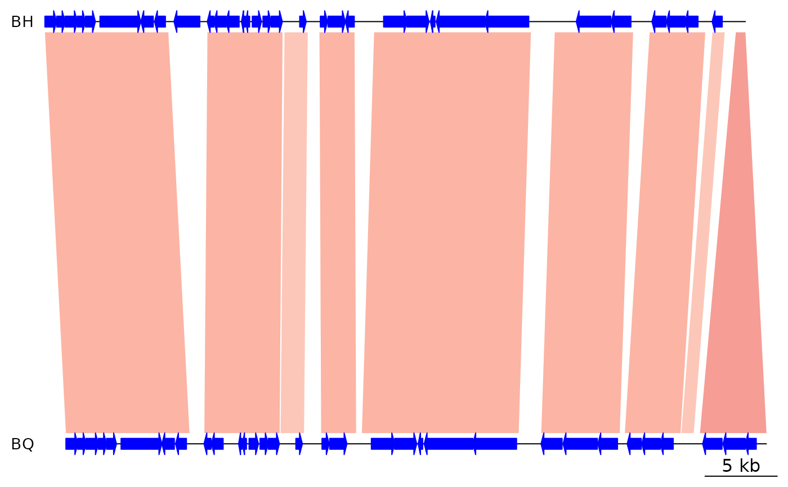

Creating comparisons between genomic sequences from files
read_comparison.RdFunctions to parse comparison objects from tabular data or BLAST output.
Usage
read_comparison_from_file(file, fileType, ...)
read_comparison_from_files(files, fileType, seg_labels = NULL, ...)
read_comparison_from_blast(
file,
sort_by = NULL,
filt_high_evalue = NULL,
filt_low_per_id = NULL,
filt_length = NULL,
color_scheme = NULL,
reverse = 0
)
read_comparison_from_tab(file, header = TRUE, filt_length = NULL, reverse = 0)Arguments
- file
A character string containing a file path, or a file connection.
- fileType
A character string containing the file format to parse. Must be one of:
"blast", or"tab".- ...
Further arguments to pass to
read_comparison_from_blastorread_comparison_from_tab, see arguments below.- files
A list or character vector containing file paths. Supports wildcard expansion (e.g. *.txt).
- seg_labels
A character vector containing
dna_seglabels. When provided, this function will search for file names that match thesedna_seglabels. For example, withseg_labels = c("seg1", "seg2", "seg3"), it will look for"seg1_seg2"and"seg2_seg3"among the file names provided by thefilesargument, parse those files, and ignore all other files provided.- sort_by
A character string containing the name of a column to sort by. Must be a numeric column.
- filt_high_evalue
A numerical, filters out all comparisons with an e-value higher than this value (unfiltered when left as
NULL).- filt_low_per_id
A numerical, filters out all comparisons with a percentage identity lower than this value (unfiltered when left as
NULL).- filt_length
A numerical, filters out all comparisons that have alignments shorter than this value (unfiltered when left as
NULL).- color_scheme
A color scheme to apply. Possible values include
grey,red_blue, andNULL(which applies no color scheme). See gradient_color_scheme for more details.- reverse
When provided, the
comparisonwill be reversed. Ifreverse = 1, the first side will be reversed. Ifreverse = 2, the second side will be reversed. Ifreverse < 1, no side is reversed. Ifreverse > 2, both sides are reversed.- header
Logical. If
TRUE, the first line will be parsed as a header containing column names.
Value
A list of comparison objects for read_comparison_from_files,
and a single comparison object otherwise.
Details
To make comparisons from tabular files, the columns in these files must
include start1, end1, start2, and end2. If no header is specified,
these columns will be expected in that order, and an optional fifth column
will be parsed as the color of the comparison under the col column.
Additional columns can be included regardless of whether a header was
specified.
BLAST output must be provided in the default tabular format (-outfmt 6),
which contains the following columns in this order:
qseqid, sseqid, pident, length, mismatch, gapopen,
qstart, qend, sstart, send, evalue, and bitscore.
The resulting comparison object will contain these columns under these
names: name1, name2, per_id, aln_len, mism, gaps, start1,
start2,end1, end2, e_value, and bit_score.
Examples
## Read comparison from tabular data
tab_file <- system.file('extdata/comparison2.tab', package = 'genoPlotR')
tab_comp <- read_comparison_from_tab(tab_file)
data.frame(tab_comp)
#> start1 end1 start2 end2 direction
#> 1 50 500 1899 2034 1
#> 2 800 1100 2732 2508 -1
## Load dna_segs
data(barto)
bh <- barto$dna_segs[[3]]
bq <- barto$dna_segs[[4]]
## Read comparison from BLAST output
blast <- system.file('extdata/BH_vs_BQ.blastn.tab', package = 'genoPlotR')
blast_comp <- read_comparison_from_blast(blast, color_scheme = "red_blue")
## Plot
plot_gene_map(dna_segs = list(BH = bh, BQ = bq),
comparisons = list(blast_comp),
xlims = list(c(1,50000), c(1, 50000)))
